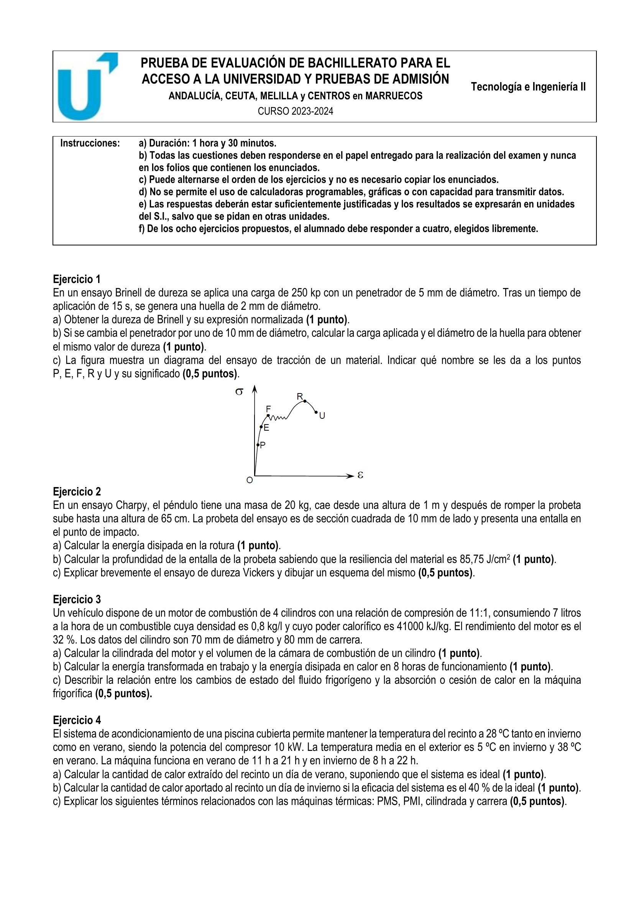
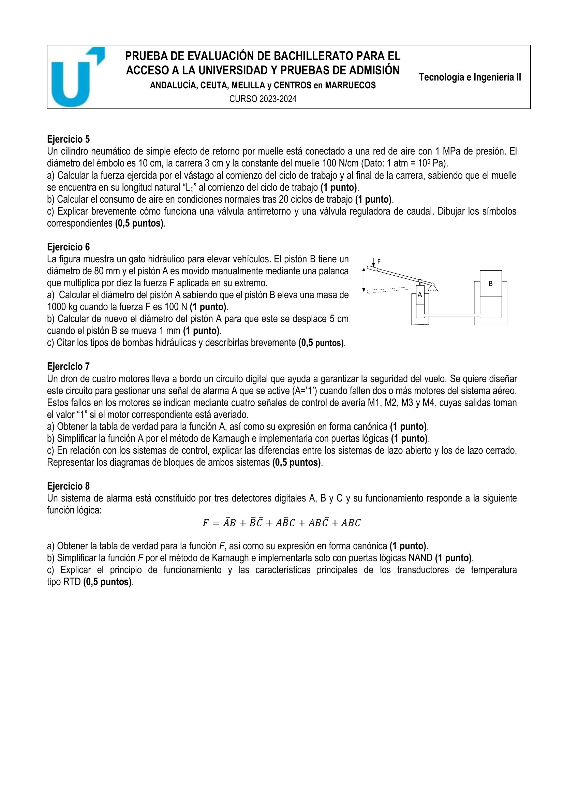

⏱️ 90 min · 8 ejercicios · elegir 4
← Volver al índice


a) HB = 2·250/(π·5·(5−√(25−4))) ≈ 76,3 → 76 HBW 5/250/15 · K = F/D² = 10 kp/mm²
b) Queremos la misma dureza HB con D' = 10 mm. Por el principio de similitud de Brinell, mantener la misma HB equivale a mantener constante F/D². Con F/D² = 250/25 = 10 kp/mm², para D' = 10 mm resulta F' = 10·100 = 1000 kp. Sustituyendo en la fórmula de Brinell y despejando d': d' = 4,00 mm.
c) Puntos del diagrama σ-ε: P = límite de proporcionalidad (fin de Hooke) · E = límite elástico (máxima tensión sin deformación permanente) · F = límite de fluencia (escalón de fluencia) · R = resistencia a tracción (tensión máxima, pico de la curva) · U = punto de rotura.
a) E = m·g·(h₀−h_f) = 20·9,81·0,35 ≈ 68,67 J
b) A_neta = E/ρ = 68,67/85,75 ≈ 0,801 cm² · entalla ≈ 2 mm
c) Vickers: penetrador piramidal de diamante (ángulo 136°); HV = 1,854·F/d²
a) V_unit = π·7²/4·8 ≈ 307,88 cm³ · V_cc = V_unit/(rc−1) ≈ 30,79 cm³ · V_total = 4·V_unit ≈ 1231,5 cm³
b) m_comb = 7·0,8·8 = 44,8 kg · E_total = 44,8·41000 ≈ 1,837·10⁶ kJ · W = η·E ≈ 587 776 kJ · Q_perd = (1−η)·E ≈ 1 249 024 kJ
c) En el evaporador el fluido absorbe calor al cambiar de líquido a gas; en el condensador cede calor al pasar de gas a líquido
a) Verano (frigorífica): COP_ideal = 301/(311−301) = 30,10 · W = 10 kW·10 h = 360 000 kJ · Q_F = COP·W ≈ 10 836 MJ
b) Invierno (bomba calor): COP_ideal = 301/(301−278) ≈ 13,09 · COP_real = 0,4·COP_ideal ≈ 5,24 · W = 10 kW·14 h = 504 000 kJ · Q_C ≈ 2638,3 MJ
c) PMS (punto muerto superior): posición más alta del pistón · PMI: posición más baja · Cilindrada: V_unit·nº cilindros · Carrera: distancia PMS-PMI
a) A = π·0,1²/4 ≈ 78,54 cm² · F_teórica = P·A ≈ 7853,98 N · F_inicio (L₀, muelle no aporta) ≈ 7854 N · F_final (muelle comprimido 3 cm: F_m = 100·3 = 300 N) ≈ 7554 N
b) V_aire(CN) = A·c·(P+P_atm)/P_atm·20 ciclos = 7,854·10⁻³·0,03·(10⁶+10⁵)/10⁵·20 ≈ 0,05184 m³ ≈ 51,84 L
c) Antirretorno: permite paso en un solo sentido · Reguladora de caudal: limita el flujo de aire; símbolos normalizados ISO
a) F_A = 10·F = 1000 N · F_B = 1000·9,81 = 9810 N · S_B = π·40² ≈ 5026,5 mm² · S_A = S_B·F_A/F_B ≈ 512,4 mm² · d_A ≈ 25,54 mm
b) Conservación de volumen: S_A·5 = S_B·0,1 → S_A = S_B/50 ≈ 100,5 mm² · d_A ≈ 11,31 mm
c) Bombas hidráulicas: de engranajes, de paletas, de pistones (axiales o radiales); convierten energía mecánica en hidráulica
a) A = Σm(3,5,6,7,9,10,11,12,13,14,15) (≥ 2 motores averiados de 4)
b) A = M₁M₂ + M₁M₃ + M₁M₄ + M₂M₃ + M₂M₄ + M₃M₄ (simplif. Karnaugh, 6 implicantes de pares)
c) Lazo abierto: sin realimentación, salida no se mide · Lazo cerrado: salida realimentada al comparador → mayor precisión
a) F = Σm(0,2,3,4,5,6,7) (todos excepto m₁ = A̅B̅C)
b) F = A + B + C̅ (complemento de A̅B̅C). Implementación solo NAND: F = ((A̅)·(B̅)·C)̅ convertido
c) RTD (termorresistencia): hilo de platino cuya R aumenta linealmente con T; precisión elevada, uso industrial